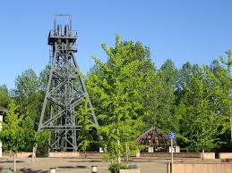

Carmaux
le Pays Noir


⟹ Terre de Jean Jaurès et du Charbon ⟸
Les premières traces écrites de l'exploitation du charbon à Carmaux remontent à 1295 : des taxes étaient alors prélevées sur le charbon de terre transporté à dos de mulet lors du franchissement du pont d'Albi. Mais c'est en 1752 que Gabriel de Solages fonde la Compagnie minière de Carmaux, l'une des toutes premières compagnies houillères de France, bientôt complétée par une verrerie royale au charbon de terre, créée en 1754 sur les terres de la famille de Solages.

Le XIXe siècle voit l'essor industriel du bassin carmausin, porté par le charbon qui alimente l'industrie verrière. Mais cette révolution industrielle attise aussi de profonds conflits sociaux : en 1892, le licenciement du mineur syndicaliste Jean-Baptiste Calvignac, pourtant élu maire de la ville, provoque une grève de plus de 2 000 mineurs qui dure trois mois et retentit jusqu'à Paris.
Le courage, c'est de chercher la vérité et de la dire.
— Jean Jaurès, élu député de Carmaux en 1893Converti au socialisme par cette lutte, Jean Jaurès se fait élire député de Carmaux en 1893 et devient la grande figure tutélaire de la ville, dont il défend inlassablement les mineurs puis les ouvriers verriers licenciés, à l'origine de la création de la Verrerie Ouvrière d'Albi en 1896. Aujourd'hui reconvertie dans le tourisme de mémoire, Carmaux reste indissociable de cette épopée industrielle et sociale.
De 1752 à la fermeture définitive des derniers puits à la fin du XXe siècle, le charbon aura façonné Carmaux et son bassin, jusqu'à employer près de 4 000 mineurs et produire 1,7 million de tonnes de houille au plus fort de l'après-guerre, en 1946. Cette « épopée industrielle », faite de labeur et de luttes sociales, se visite aujourd'hui à travers plusieurs hauts lieux de mémoire, entre galeries reconstituées, ancienne verrerie royale et vaste site à ciel ouvert reconverti en parc de loisirs.
Biennale des Verriers : depuis une vingtaine d'années, le Domaine de la Verrerie accueille cet événement de référence dédié aux arts du feu et au verre contemporain.
Espace Jaurès, à Pampelonne : lettres manuscrites, photographies et témoignages d'époque permettent de redécouvrir, à quelques kilomètres de Carmaux, le parcours du grand tribun tarnais.
Alentours : Albi et sa cathédrale Sainte-Cécile classée à l'UNESCO, à une vingtaine de kilomètres, abritent le musée Toulouse-Lautrec ; Cordes-sur-Ciel et le vignoble de Gaillac complètent utilement une découverte du Tarn.
Meilleure période : le printemps et l'été pour profiter de Cap'Découverte et de ses activités de plein air, ou octobre les années impaires pour la Biennale des Verriers.
Marché : un marché hebdomadaire anime le centre-ville, entre halles et places, avec les produits fermiers du Ségala tarnais.
Se loger : hôtels et chambres d'hôtes au centre-ville et aux abords de Cap'Découverte ; l'Office de Tourisme du Ségala Tarnais renseigne sur les visites guidées du patrimoine minier.